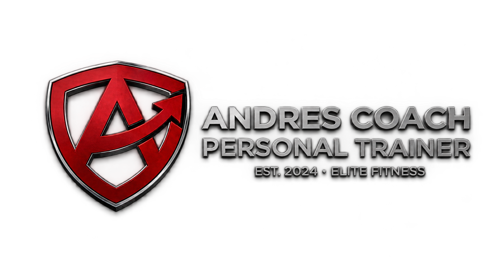
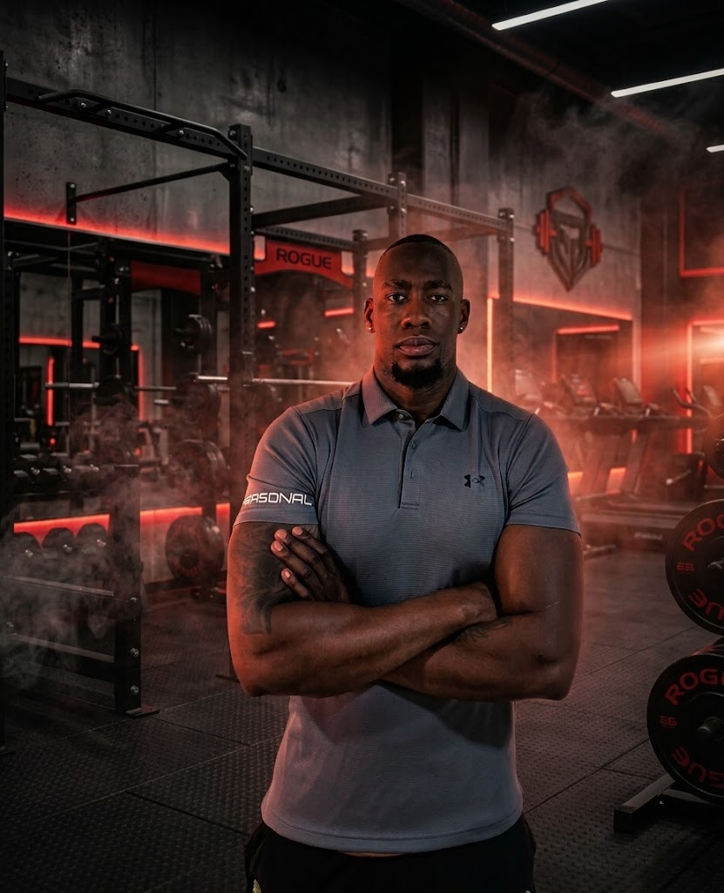
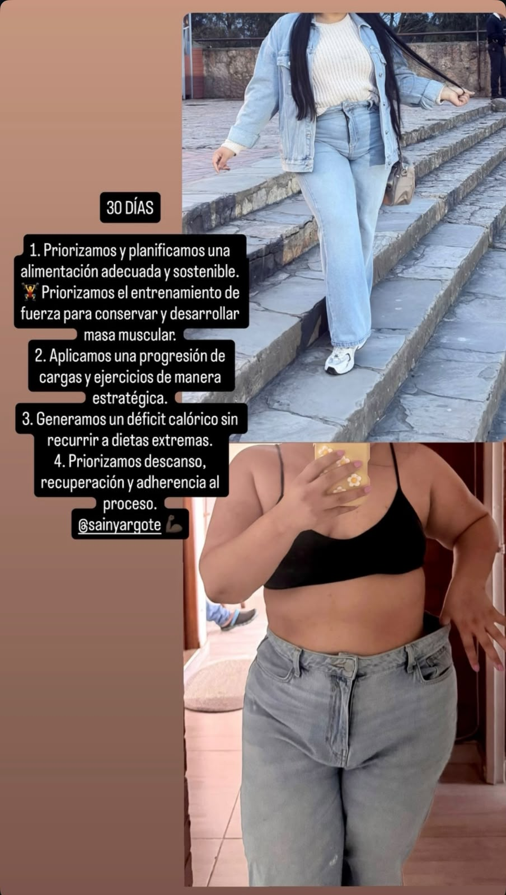

Activación
Aprende a preparar tu cuerpo correctamente para optimizar el rendimiento y prevenir lesiones en cada sesión.

Soy Andrés Córdoba, entrenador personal apasionado por el fitness, el bienestar y el desarrollo físico. Actualmente trabajo como entrenador en Smart Fit Fontibón, donde me caracterizo por ser una persona disciplinada, motivadora, responsable, paciente y comprometida con el progreso de cada cliente.
Me enfoco en crear entrenamientos personalizados, acompañar cada proceso y ayudar a desarrollar constancia, confianza y buenos hábitos para alcanzar los objetivos de manera progresiva y segura.
Disciplina, constancia y actitud: el cambio empieza contigo.

AC TEAM es una forma de entender el entrenamiento como un proceso completo, profesional y pensado para avanzar de manera constante. No se trata solamente de realizar ejercicios, sino de aprender a entrenar correctamente, mejorar nuestras capacidades y construir hábitos que puedan mantenerse a largo plazo.
Cada parte de Andrés Coach representa un principio fundamental de nuestro método: Técnica, Personalización, Progresión y Constancia. Estos cuatro pilares trabajan juntos para crear una experiencia de entrenamiento organizada, dinámica y adaptada a cada persona.
Aprende a preparar tu cuerpo correctamente para optimizar el rendimiento y prevenir lesiones en cada sesión.
Aumentamos poco a poco la dificultad para conseguir mejores resultados de forma constante.
Combinamos entrenamiento, descanso y buenos hábitos para mantener un proceso sostenible.
Buscamos mejorar cada día mediante disciplina, constancia y compromiso con tus objetivos.
Cada entrenamiento está diseñado para sacar tu mejor versión, priorizando siempre la técnica antes que el peso. Una buena ejecución permite entrenar de forma más segura, aprovechar mejor cada movimiento y progresar de manera constante.
La calidad de cada repetición es más importante que cuánto peso puedes levantar.
Mi método no se limita a entregarte una rutina y un plan de alimentación genéricos. Se trata de un proceso estructurado de planificación, ejecución, seguimiento y ajuste continuo, diseñado para que cada etapa tenga un propósito claro y avance de forma constante hacia tus metas.
Establecemos un punto de partida real mediante una evaluación integral donde recopilo información clave:
Diseño una estrategia 100% personalizada basada en tu diagnóstico inicial:
Planteamos una alimentación adaptada a tus metas y estilo de vida:
Todo el proceso se gestiona a través de una aplicación de seguimiento personalizada:
Resultados sostenibles logrados a través de planificación, disciplina y la aplicación estricta del Método Andrés.

"Creó una versión de ella que no conocía..."
Se enfocó el proceso en una recomposición corporal completa: aumento visible de masa muscular limpia (tonificación y volumen en glúteos y piernas), definición del torso/espalda y reducción de porcentaje de grasa manteniendo una cintura pequeña y tonificada.

"Resultados visibles desde los primeros 30 días..."
Reducción significativa de medidas abdominales y masa grasa general en un periodo corto de 30 días, logrando un cambio estético notable (visibilidad de ropa holgada) sin perder firmeza ni masa muscular.
Únete a esta gran familia: ya somos más de 15 personas advancing firmemente hacia el mismo objetivo. Al adquirir este producto no solo obtienes una herramienta de alto valor para transformar tus resultados, sino también el respaldo de una comunidad activa que avanza junta, comparte el proceso y no deja a nadie atrás. Da el paso hoy y asegura tu lugar.
Elige la modalidad que mejor se adapte a tu ritmo, objetivos y estilo de entrenamiento.
Entrenamiento personalizado con acompañamiento directo durante cada sesión, corrigiendo la técnica y guiando tu progreso paso a paso.
Combina sesiones presenciales con planificación y seguimiento online para mantener tu progreso incluso cuando no puedes entrenar junto al coach.
Entrena desde donde estés con una planificación personalizada y acompañamiento para ayudarte a mantener el rumbo hacia tus objetivos.